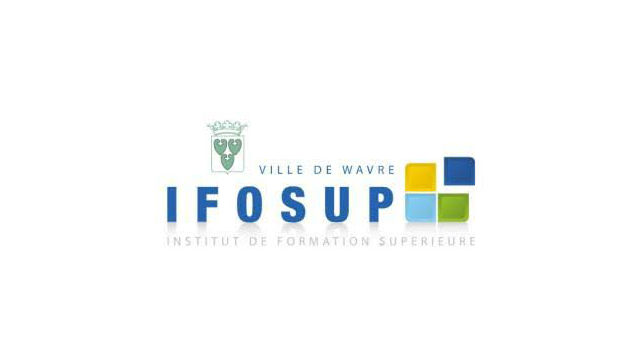

Présentation de mon projet web à L'IFOSUP
Bienvenue sur mon site web, un projet réalisé dans le cadre de mon cours de développement web à L'IFOSUP. Ce projet a pour but de nous familiariser avec la création de sites internet et d'explorer différentes notions en lien avec le développement. Chaque groupe, composé de 1 à 2 personnes, devait définir des termes communs, ainsi que présenter un métier et deux définitions propres à chaque membre du groupe.
Pour la réalisation de ce site, j'ai choisi de travailler avec HTML et CSS, préférant une approche manuelle afin de renforcer mes compétences en développement front-end. Bien que nous ayons eu la possibilité d'utiliser des outils de création de sites web via des interfaces de glisser-déposer, tels que WIX, j'ai souhaité m'immerger dans le code pour améliorer et revisiter mes bases en structure et du design web.
L'un des principaux défis de ce projet était de rendre le site accessible et lisible sur tous types d'appareils, tant sur ordinateur que sur téléphone mobile, ce qu'on appelle la conception "responsive". Cette approche vise à offrir une expérience utilisateur fluide et cohérente, quel que soit le support utilisé.
Ce projet m'a permis d'explorer davantage les aspects de la mise en page, du design, et de l'optimisation pour les différents formats d'écrans. En plus de la technique, j'ai également réfléchi à l'organisation des informations et à leur présentation de manière claire et intuitive.
J'espère que vous apprécierez naviguer sur ce site autant que j'ai apprécié le créer. Merci pour votre visite !
